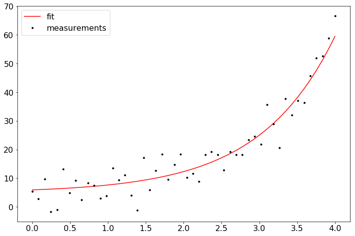
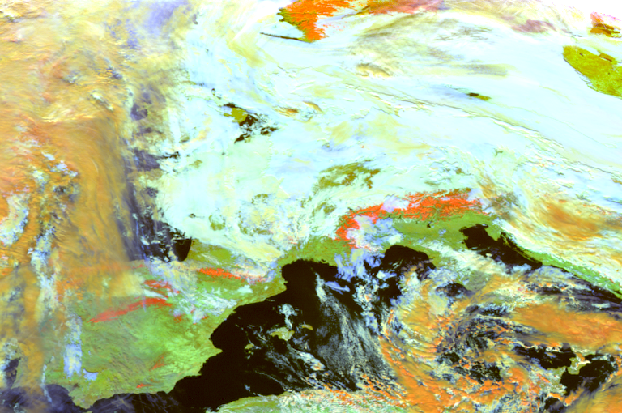
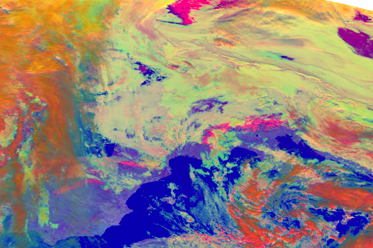

Motivation
Why Python?

Python is an unusual case for being both one of the most visited tags on Stack Overflow and one of the fastest-growing ones. (Incidentally, it is also accelerating! Its year-over-year growth has become faster each year since 2013). Source: StackOverflow Blog
Python…
- is beginner friendly
- flexible
- readable
- has a big onliny community
- is a first-class tool for scientific computing tasks
- is used in Remote Sensing, Machine Learning, Big Data Analysis, Image Processing , Data Visualization
- is the 2nd most demanded programming skill (in the US)
- is the 2nd best paid programming skill (> 105’000$ in the US)
- is heavily used at large companies like Google & Facebook but also at NASA, ESA, EUMETSAT, etc.
Aim of the course
At the end of this course you will be able …
… to work with the basic concepts of Python:
for i in range(10):
if i==5:
print("fünf")
else:
print(i)
0
1
2
3
4
fünf
6
7
8
9
… to read, interpret and manipulate your scientific data with the standard Python tools for data science (numpy, scipy, pandas):
tabelle = pd.read_csv('data/frankfurt_weather.csv',parse_dates=['time'],index_col="time",sep=",")
tabelle.head()
| visibility | air_temperature | dewpoint | wind_direction | wind_speed | air_pressure | cloud_height | cloud_cover | |
|---|---|---|---|---|---|---|---|---|
| time | ||||||||
| 2015-01-01 00:20:00 | 2800 | 1.0 | 1.0 | 0.0 | 0.0 | 1036.0 | 200.0 | OVC |
| 2015-01-01 00:50:00 | 1500 | 1.0 | 1.0 | 0.0 | 0.0 | 1036.0 | 100.0 | OVC |
| 2015-01-01 01:20:00 | 1000 | 1.0 | 1.0 | 0.0 | 0.0 | 1036.0 | 100.0 | OVC |
| 2015-01-01 01:50:00 | 700 | 1.0 | 1.0 | 0.0 | 0.0 | 1036.0 | NaN | NaN |
| 2015-01-01 02:20:00 | 600 | 1.0 | 1.0 | 0.0 | 0.0 | 1036.0 | NaN | NaN |
… to plot your data in various ways using matplotlib:
temp_resampled = tabelle.air_temperature.resample("1d").mean()
dewpt_resampled = tabelle.dewpoint.resample("1d").mean()
plt.figure(figsize=(20,5))
plt.rcParams['font.size'] = 18
plt.plot(temp_resampled,label="Air temperature")
plt.plot(dewpt_resampled,label="Dewpoint")
plt.legend()
plt.ylabel("Temperature (°C)")
plt.xlim(("2015-01-01","2015-12-31"))
plt.xticks(["2015-{:02d}-15".format(x) for x in range(1,13,1)],["Jan","Feb","Mar","Apr","May","Jun","Jul","Aug","Sep","Oct","Nov","Dec"])
plt.show()

… to statistically analyze your data and know how to build statistical (maybe even machine learning) models using scikit-learn:
popt, pcov = curve_fit(func, xdata, ydata)
plt.figure(figsize=(12,8))
plt.rcParams['font.size'] = 16
plt.plot(xdata, func(xdata, popt), 'r-', label='fit')
plt.plot(xdata, ydata, label='measurements', c = "k", marker = ".", lw= 0)
plt.legend()
plt.show()

… to visualize your data in map plots with CartoPy:

… to read, reproject and visualize meteorological satellite data using satpy (e.g. Meteosat):

… to generate colour composites of meteorological satellite data for different use cases:
datei = ["data/W_XX-EUMETSAT-Darmstadt,VIS+IR+IMAGERY,MSG3+SEVIRI_C_EUMG_20180112120010.nc"]
files = {'seviri_l1b_nc' : datei}
scn = satpy.Scene(filenames=files)
available_bands = np.unique(np.asarray([x.name for x in scn.available_dataset_ids()]))
scn.load(available_bands)
compo = "natural_color"
scn.load([compo])
scn.show(compo)
scn[compo] = scn[compo][:,100:-100,100:-100]
scn.show("natural_color")

datei = ["data/W_XX-EUMETSAT-Darmstadt,VIS+IR+IMAGERY,MSG3+SEVIRI_C_EUMG_20180112120010.nc"]
files = {'seviri_l1b_nc' : datei}
scn = satpy.Scene(filenames=files)
available_bands = np.unique(np.asarray([x.name for x in scn.available_dataset_ids()]))
scn.load(available_bands)
compo = "snow"
scn.load([compo])
scn.show(compo)
scn[compo] = scn[compo][:,100:-100,100:-100]
scn.show("snow")

datei = ["data/W_XX-EUMETSAT-Darmstadt,VIS+IR+IMAGERY,MSG3+SEVIRI_C_EUMG_20180112120010.nc"]
files = {'seviri_l1b_nc' : datei}
scn = satpy.Scene(filenames=files)
available_bands = np.unique(np.asarray([x.name for x in scn.available_dataset_ids()]))
scn.load(available_bands)
compo = "day_microphysics"
scn.load([compo])
scn.show(compo)
scn[compo] = scn[compo][:,100:-100,100:-100]
scn.show("day_microphysics")

… and to manipulate and interpret meteorological satellite data for scientific purposes:
plt.figure(figsize=(14,8))
scn["ndvi"] = (scn[0.8] - scn[0.6]) / (scn[0.8] + scn[0.6])[100:-100,100:-100]
im = plt.imshow(np.array(scn["ndvi"].data),cmap="RdBu_r")
cb = plt.colorbar(im,fraction=0.046, pad=0.02)
cb.set_label("NDVI")
plt.xticks([]); plt.yticks([])
plt.show()